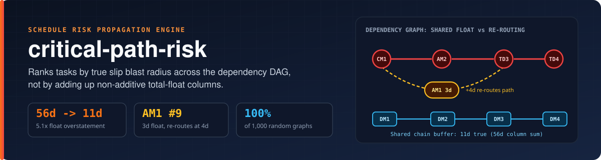
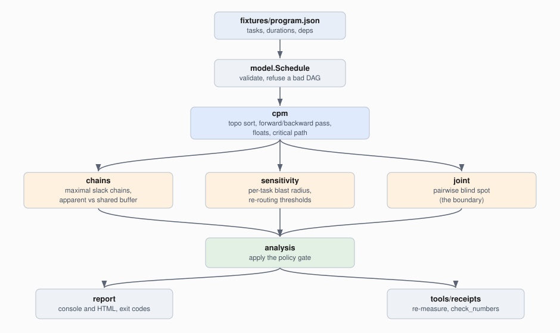

Filter the 16-task banking modernization schedule (75 working days, 8 critical tasks) to compare total float against propagated go-live delay under a 5-day slip.
| Rank | Task | Description | Status | Total Float | Free Float | 5-Day Slip Delay | Re-Route Slip |
|---|
Every figure below is read directly from the committed JSON outputs generated by make verify.
Pure standard-library CPM engine with deterministic tie-breaking, opt-in CI policy gate (exit 0 / 2 / 1), and machine-checked receipts.
